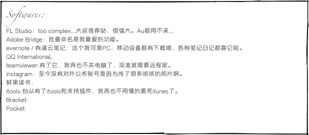

![Comics:
非常喜欢的搞笑类：
【悠哉日常大王】【上課小動作 】【丧女】【花丸幼稚园】给杏大人跪了【男子高中生的日常】唐泽唐泽
【荒川爆笑团】{{{(>_<)}}}【蜡笔小新】【银魂】土魂无人能及假发让我想到章鱼哥给我的外号哈哈伊丽莎白我也喜欢【日常】神作不解释【黑塔利亚】意大利！【血型君】我是AB我中二...【樱桃小丸子】句句深有理【灌篮高手】基本上遇到说流川枫帅的就吵起来了【樱兰高校男公关部】埴之冢光邦太可爱了【哆啦a梦】多少次梦见自己拥有时光机记忆面包醒来就莫名伤感直到现在还是会有同样的梦尤其是遇到学习上的困难啊【少年同盟】和男子日常好类似的感觉【狗与剪刀的正确用法】我也好想开书店...这样就可以买自己喜欢的书自己先看完了再卖...【热带雨林的爆笑生活】【灌篮高手】【少年同盟】
蛮有感的看后很久还会想起的：
【Nana】【XXXholic】【境界的彼方】栗山未来【坂道上的阿波罗】【那些花】 喜欢面码【空之境界】两仪式是我心中的女神 【命运石之门】牧濑红莉栖性格身高体重生日和我好像【黑执事】【夏目友人帐】画面特有感猫咪老师好温馨【吸血鬼骑士】【数码宝贝】感动了整个童年【死亡笔记】高二某个周末连续补完结果后来还禁播了【棋魂】貌似因为这个我研究了好久的围棋...【fate/zero】Saber好白痴【eva】从未看懂但其实是有自己的理解的【浪客剑心】【白兔糖】连丰丰都看这个【高达】帅【钢之炼金术师】【进击的巨人】节奏和BGM很赞【魔法禁书目录】【柯南】其实喜欢的是kid...后来追看魔术快斗【刀剑神域】【黑子的篮球】【K】很帅rhythm也不错【浪客剑心】
看完了就不太记得讲了什么的(我忘性本来就大)：
【琴浦小姐】【家庭教师】【Q弟侦探因幡】【青之驱魔师】【迷糊餐厅】【虫师】【幻影少年】【S·A特优生】【食梦者】【冰果】【Another】【薄樱鬼 雪华录】【神幻拍档】【好想告诉你】【八犬传】【邻座怪同学】【游戏王】【free】【叛逆的鲁鲁修】【只有神知道的世界 】【再见，绝望先生】【归宅部活动纪录】【妄想学生会】](favorite_files/shapeimage_4.png)